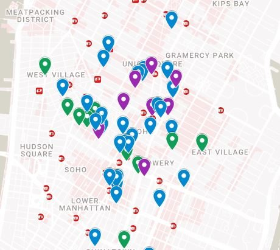
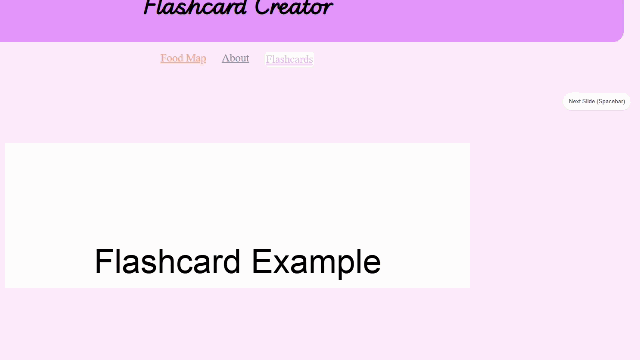

Are you an NYU student who uses flashcards to study?
Do you have Celiac Disease and want to eat while you study near campus?
This is the website for you!
How to use the Map:
Zoom-in on the map to wherever you are and click on any of the marked pins—a small sidebar will appear with each restaurant or grocer's name, address, website, and google reviews! The map also includes local transit stations highlighted in red for commuter planning.

Upload a PDF from your computer/phone using the button on the left, and use the button on the right to change to another page—it's that easy! On computer, there is the added functionality of a view slider on the left to dynamically cover and uncover part of the PDF while studying, as well as the ability to use your keyboard's spacebar to advance to the next random slide. Don't forget to play the audio at the bottom of the page after you study to celebrate!
